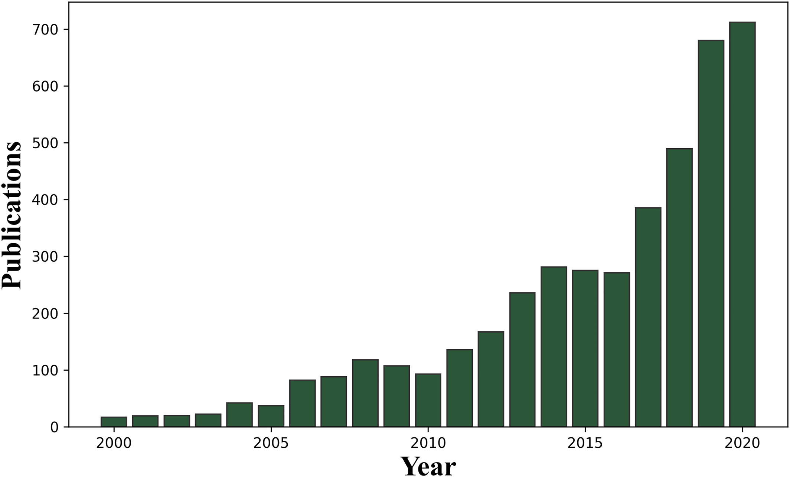
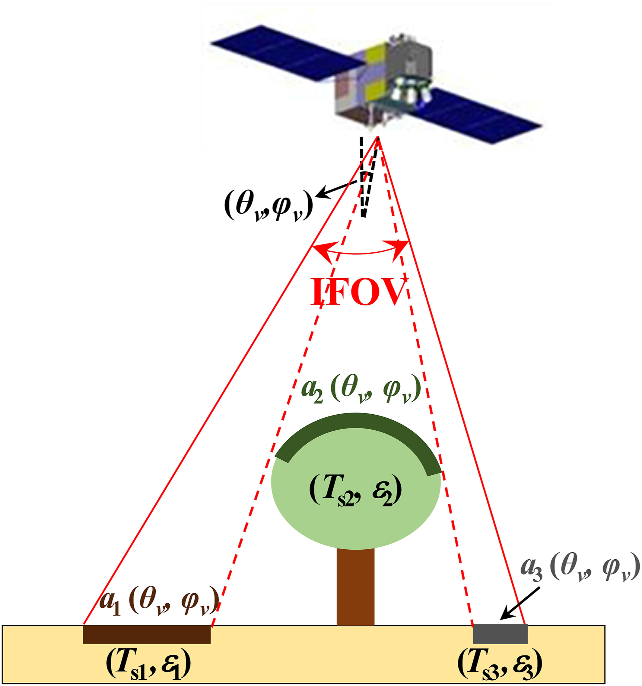
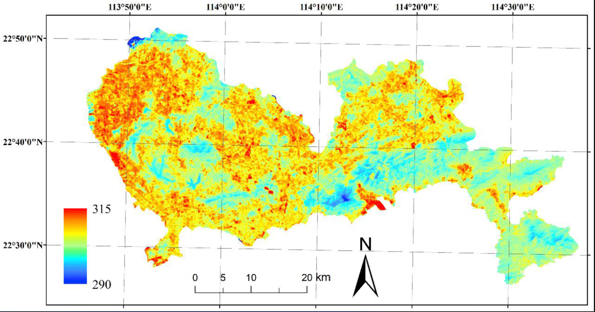
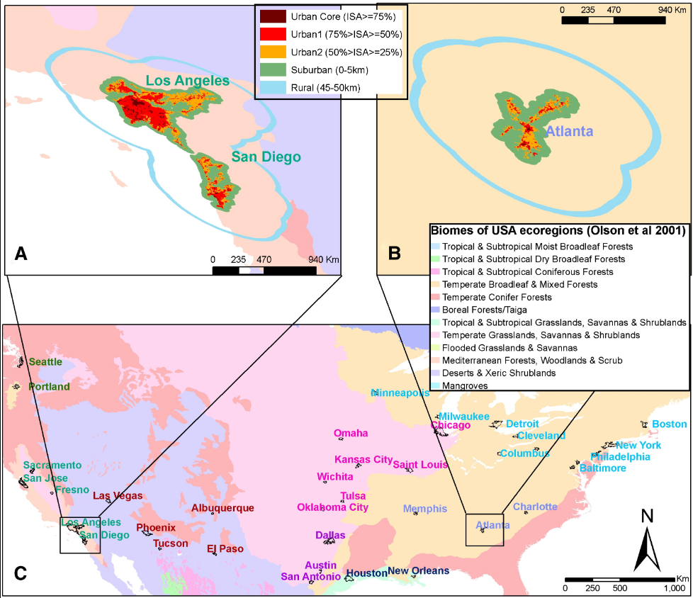

8 temperature
8.1 Summary
In today’s learning diary, I’ve chosen to write about topics related to temperature, simply because I’m more interested in it. In addition, I think it is also a very important part of remote sensing, with more than 700 articles published in the field of remote sensing surface temperature in 2020 alone.

Publication statistics in the field of remote sensing-based LST, 2000-2020
Definition of Satellite-Derived LST
LST is the thermodynamic temperature of a thin layer in the interface between soil, vegetation or other surface components and the atmosphere. It reflects how hot or cold is the Earth’s surface would feel to the touch.

Schematic of the land surface in remote sensing
\(T_{si}\): surface temperature
\(\varepsilon_{i}\): emissivity
\(\alpha_{i}\): projected area weight for the ith visible component
\(\theta_{v}\): VZA
\(\phi_{v}\): viewing azimuth angle
For a given satellite sensor, the radiometric temperature can be formulated as follows(Chandrasekhar 2013; P. Dash and Fischer 2002; Prata et al. 1995): \[
T_{\mathrm{s}}\left(\theta_{v}, \varphi_{v}\right)=B_{\lambda}^{-1}\left[\frac{R_{\lambda}\left(\theta_{v}, \varphi_{v}\right)-R_{a t_{\lambda} \uparrow}\left(\theta_{v}, \varphi_{v}\right)-\tau_{\lambda}\left(\theta_{v}, \varphi_{v}\right)\left[1-\varepsilon_{\lambda}\left(\theta_{v}, \varphi_{v}\right)\right] R_{a t_{\lambda} \downarrow}}{\tau_{\lambda}\left(\theta_{v}, \varphi_{v}\right) \varepsilon_{\lambda}\left(\theta_{v}, \varphi_{v}\right)}\right]
\] \(T_s\): radiometric temperature
\(\theta_v\): viewing zenith angle(VZA)
\(B_{\lambda }^{-1}\): inverse function of Planck’s law
\(R_\lambda\), \(R_{at_{\lambda}\uparrow}\) and \(_{at_{\lambda}\downarrow}\): at-sensor observed radiance, upward atmospheric radiance, and downward atmospheric radiance
\(\tau_\lambda\): channel atmospheric transmittance
\(\varepsilon_\lambda\): channel land surface emissivity(LSE)
Heat Island
Buildings, roads, and other man-made structures have a higher capacity to absorb and release solar radiation compared to natural features like forests and bodies of water. Consequently, urban areas, characterized by dense concentrations of such structures and limited green spaces, tend to exhibit higher temperatures than surrounding regions, forming what is known as urban heat islands (UHI). The proliferation of urban populations, coupled with the exacerbation of UHI effects and the escalating frequency and duration of heatwaves due to climate change, raise significant concerns regarding the heightened health risks faced by vulnerable urban populations during extreme heat events.
Remote sensing technology offers a valuable tool for monitoring the dynamics of UHI phenomena over time on a global scale. Thermal mapping derived from satellite imagery enables the tracking of land surface temperature (LST) variations, while optical data captures changes in land use and cover, aiding in the estimation of air temperatures across different urban zones. Once UHIs are identified and mapped, integrating socioeconomic data such as population demographics and health indicators into heat vulnerability indices (HVI) facilitates the identification of at-risk communities and informs targeted interventions aimed at mitigating the adverse health impacts associated with heatwaves.

Land surface temperature (in K) image of Shenzhen, China
8.2 Application
Understanding the urban heat island effect and finding ways to mitigate it has undoubtedly been the focus of environmental research in recent years. I thought I knew a lot about the heat island effect because it is, after all, one of the major problems facing China’s megacities, but the articles I found about it really surprised me, because it seems that the main factors are not just the human actions I assumed. Firstly, it is mentioned in the analysis of heat island effect that urban heat waves are transient and obviously influenced by natural environment, and high-resolution data in time and space are needed to study them (Buo, Sagris, and Jaagus 2023). So a lot of research has focused on the seasonal heat island effect (Paschalis et al. 2021-06) or the daytime versus night heat island effect(Arellano and Roca 2021) or the geographical location of the city as the heat island effect(especially humid and arid regions)(Zhang et al. 2022-07-01).
After learning this knowledge, I began to wonder what factors have the greatest influence on the heat island effect, and fortunately, there are some scholars who are also interested in this question:
Imhoff et al. (2010) conducted a spatial analysis using Landsat TM-based NLCD 2001 data for impervious surface area (ISA) and MODIS data averaged over three years (2003–2005) for land surface temperature (LST) to study the urban heat island (UHI) skin temperature amplitude and its correlation with development intensity, size, and ecological setting in 38 major cities across the continental United States. Their findings revealed that the ecological context significantly influences the amplitude of summer daytime UHI, with the largest differences observed for cities situated in temperate broadleaf and mixed forest biomes. ISA was identified as the primary driver for temperature increase, explaining 70% of the total variance in LST across all cities. On average, urban areas were notably warmer than non-urban fringes by 2.9 °C, except for cities in arid and semiarid climates. The UHI amplitude exhibited seasonal asymmetry, with a higher difference in summer (4.3 °C) compared to winter (1.3 °C). In desert environments, the response of LST to ISA displayed a unique “U-shaped” horizontal gradient. The findings suggest a possible heat sink effect in certain cities. Overall, the study highlights that UHI amplitude increases with city size and varies seasonally across different biomes, particularly in forested ecosystems, indicating potential implications for residential energy consumption during summer.

A&B show typical layout, C shows the cities and their biomes used in this article
What is more interesting is that I used to think that vegetation could slow down the heat island effect because of its ability to absorb carbon dioxide, etc. In Park, Guldmann, and Liu (2021)’s article, it is actually due to the fact that trees can provide shelter for cities, thus reducing the formation of heat waves, which shows how sensitive heat waves are to the environment, so it really needs high-precision sensors to fully analyze them.
8.3 Reflection
Exploring the concept of UHI, I’ve realized the complex interplay between natural and anthropogenic factors in influencing urban temperature patterns. While human activities contribute to the formation of heat islands, ecological settings, such as vegetation cover and geographical location, also play significant roles. This underscores the importance of considering both natural and human-induced factors in UHI research and mitigation strategies.
Reflecting on the articles reviewed, I’ve gained a deeper understanding of the multifaceted nature of the UHI phenomenon and its implications for urban sustainability and public health. Moving forward, I’m intrigued to explore interdisciplinary approaches that combine remote sensing, climatology, and urban planning to develop effective strategies for mitigating the impacts of heat islands and promoting resilient cities.